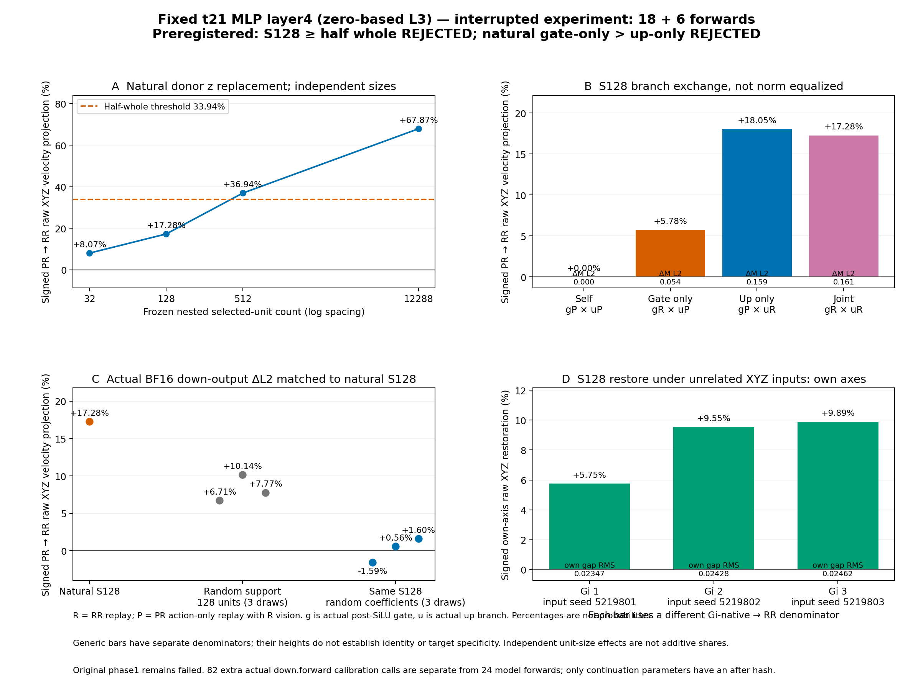
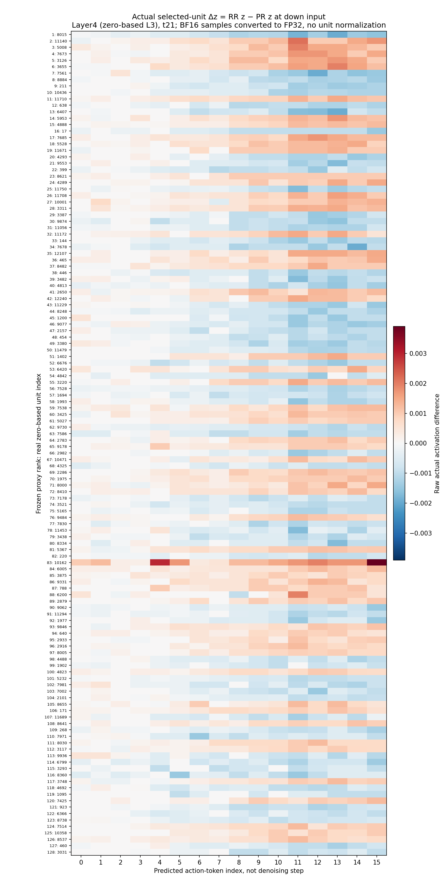
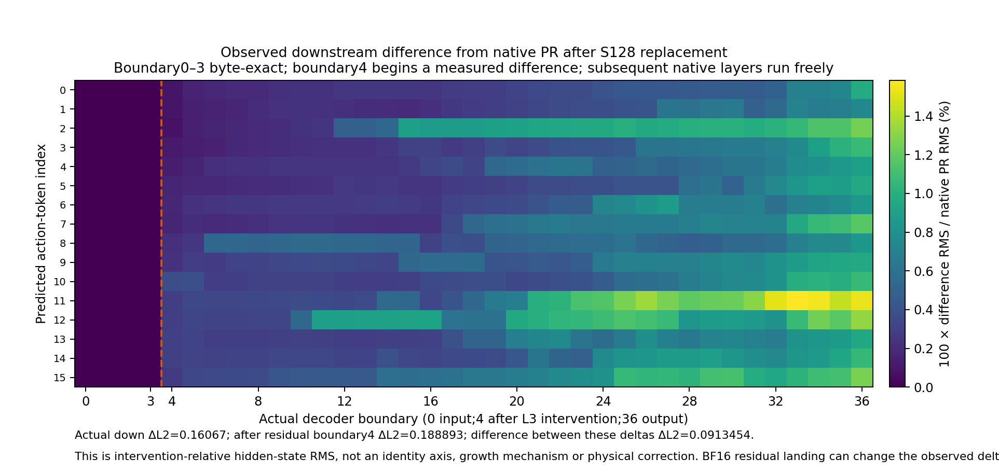

Interrupted run: 18 saved forwards plus 6 continuation. No identity or probability claim.



All examples are denoising t21, not denoising step0. g/u/z are actual BF16 hook samples.
| Rank | Unit | Context | Actual g | Actual u | Actual z |
|---|---|---|---|---|---|
| 1 | 8015 | RR | -0.267578125 | 0.0166015625 | -0.00445556640625 |
| 1 | 8015 | PR | -0.267578125 | 0.0164794921875 | -0.00439453125 |
| 2 | 11140 | RR | -0.267578125 | 0.158203125 | -0.042236328125 |
| 2 | 11140 | PR | -0.267578125 | 0.1572265625 | -0.0419921875 |
| 3 | 5008 | RR | -0.263671875 | -0.0947265625 | 0.0250244140625 |
| 3 | 5008 | PR | -0.263671875 | -0.09375 | 0.024658203125 |